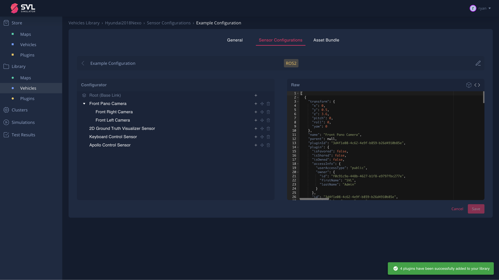

Library#
The Library page in the SVL Simulator user interface displays the set of maps and vehicles that you have added to your account, and which are available for use in simulations. A tutorial video on adding an asset from the Store, as well as uploading your own asset, can be found here.
{kind=link}
Introduction top#
Library is the central place for all of the content and data associated with your SVL Simulator account. You can access your maps and vehicles from anywhere once you log in to your account, allowing you to save your content in the cloud, including your own map environments, plugins, vehicle models, and sensor configurations.
Maps top#
When you log in for the first time, your Library page will show some widely used default assets that are automatically made available to your account.
{kind=link}
You can click:
- "All" to see all maps that you have added to your Library.
- "My Content" lists maps for which you are the owner (meaning they were built and uploaded by you).
- "My Shares" lists maps that are owned by you and were to other users (using the Sharing feature).
- "Added from Store" lists maps from other users that you have added to your library from store.
- "Shared with Me" lists maps that were shared with you by other users.
Adding a map top#
You can add maps to your Library from either the Store page or by clicking the "Add new" button at the top right.
To upload your own map:
-
From the Library, click the "Add new" button.
-
Drag and drop or click to upload an AssetBundle which you have built for the version of SVL Simulator you are running.
-
Once the upload has finished and the AssetBundle has been processed, fill in the details about your new map, including Map Name, Description, License, Copyright, and Tags.
-
Click "Publish" to publish the map to your personal library, allowing it to be used in your simulation configurations. You can click "Keep as draft" to save and publish later.
{kind=link}
{kind=link}
{kind=link}
Viewing a map top#
Once you have successfully added a map to your Library, you will be able to see the map and its details when you select it.
{kind=link}
There are several additional actions possible on a map page:
- Edit: You can edit the map's detail information.
- Share: You can share your private maps with other users to allow them to use the map in their simulations.
- Download the associated HD map in various supported formats that were built into the asset.
Previewing the HD Map top#
Select the eye icon in the HD Maps header to open a dialog with an interactive version of the HD map in the browser. The preview includes the lane lines of the roads and can be zoomed or rotated to inspect different parts of the map.
{kind=link}
Editing a map top#
Editing a map allows you to update the details about your new map, including Map Name, Description, License, Copyright, and Tags. If the map is your own, then you can also update the asset bundle of the map and also upload new asset bundles for supporting various 'SVL Simulator' versions.
{kind=link}
There are several additional actions possible when editing:
- Add to Store: You can make the map public so that other users may add it to their library.
- Unpublish: You can "unpublish" the map and return it to the "draft" status, disabling the ability for you to use it in a valid simulation.
- Delete Map: Delete the map entirely from your account and library. Once you do this, you will need to go back to where you obtained the map (or re-upload it) in order to add it to your library again.
NOTE: Any changes to the map such as Removing from the Store, or Unpublishing it, or Deleting will not be retroactively applied. That is the changes will have no impact on the users who already have the map in their library. For example, if a map is already in a user's library, then that user can continue to use the map in the simulations even if the map has been removed from the store or has been deleted or unpublished by the owner.
Creating a map top#
Please see the Assets document for more information on creating and building custom maps and vehicles for SVL Simulator in Developer Mode. You can read the Map Annotation page for instructions on annotating, importing, and exporting HD maps.
Vehicles top#
The Vehicle tab under Library contains the list of vehicles available for you to use in your simulations.
Adding a vehicle top#
You can add vehicles to your Library from either the Store page or by clicking the "Add new" button at the top right.
To upload your own vehicle:
-
From your Library, click the "Add new" button.
-
Drag and drop or click to upload an AssetBundle which you have built for the version of 'SVL Simulator' you are running. You can see how to create and build your own vehicle here.
-
Once your vehicle has successfully uploaded, you can fill in its information. Click "Next" to configure the sensors for this vehicle.
-
Each vehicle can have multiple configurations and must have at least one configuration to use the vehicle in a simulation. Click "Create New Configuration" to create a new configuration or "Next" to continue without a configuration. You can create a configuration later by editing the vehicle. A tutorial video on creating a sensor configuration for a vehicle can be found here.
-
To create the configuration, enter a name for the configuration, select a Bridge, and click "Create".
-
Once you have created a configuration, you may add sensors using the "+" icon next to the "Root (Base Link)". More information about sensor configuration is available in Editing Vehicles
-
Click "Publish" to publish the vehicle to your personal Library, allowing it to be used in your simulation configurations. You can click "Keep as draft" to save and publish later.
{kind=link}
{kind=link}
{kind=link}
{kind=link}
{kind=link}
Viewing a Vehicle top#
Once you have successfully added a vehicle to your Library page, you will be able to see the vehicle and its details when you select it.
{kind=link}
On a vehicle page, there are several additional actions you can take:
- Share: You can share your private vehicles with other users to allow them to use the vehicle in their simulations.
- Edit: Change the vehicle's detailed information including Name, Description, License, Copyright, and Tags.
- Sensor Configurations: Add, Modify, Copy, or Delete a sensor configuration for the vehicle.
Editing a Vehicle top#
Editing a vehicle allows you to update the details about your new vehicle, including Name, Description, License, Copyright, and Tags. If the vehicle is your own, then you can also update the asset bundle of the vehicle and also upload new asset bundles for supporting various 'SVL Simulator' versions.
{kind=link}
There are several additional actions possible when editing:
- Add to Store: You can make the vehicle public so that other users may add it to their library.
- Unpublish: You can "unpublish" the vehicle and return it to the "draft" status, disabling the ability for you to use it in a valid simulation.
- Delete Vehicle: Delete the vehicle entirely from your account and library. Once you do this, you will need to go back to where you obtained the vehicle (or re-upload it) in order to add it to your library again.
NOTE: Any changes to the vehicle such as Removing from the Store, or Unpublishing it, or Deleting will not be retroactively applied. That is the changes will have no impact on the users who already have the vehicle in their library. For example, if a vehicle is already in a user's library, then that user can continue to use the vehicle in the simulations even if the vehicle has been removed from the store or has been deleted or unpublished by the owner.
Managing Sensor Configurations top#
Each vehicle can have multiple sensor configurations. When you use a vehicle in a simulation, you will have an opportunity to select the sensor configuration to use in that simulation. The currently available sensor configurations are listed on the vehicle page. If a vehicle was added from the Store or if a vehicle is shared with you, you will also see the configurations created by the owner of the vehicle.
To create or modify a new sensor configuration when viewing a vehicle, click the icon to the right of "Sensor Configurations". When editing a vehicle, click the "Sensor Configurations" tab at the top of the view. A tutorial video on creating a sensor configuration for a vehicle can be found here.
{kind=link}
The Sensor Configurations tab provides several actions:
- Create: You can create a new configuration using the "Create New Configuration" button.
- View / Edit: You can view any configuration or edit a configuration you own by selecting the configuration or the Edit icon for a configuration.
- Copy: You can create a copy of an existing configuration using the Copy icon. If you want to modify a configuration from a different users, you must first create your own copy of that configuration and then modify the copy.
- Delete: You can delete any configuration that you own using the Delete icon which will permanently remove it entirely from the vehicle. You will be prompted to confirm the deletion before continuing.
Modifying a Sensor Configuration top#
The sensor configuration editor allows you to visually update the position and properties of a sensor used in this configuration.
{kind=link}
Each sensor has a parent which is either the "Root (Base Link)" or is another sensor. To add new sensors, click the "+" icon next to the parent and select the sensors you wish to add.
{kind=link}
Each sensor can be customized by selecting the senor from the tree view and modifying the values in the form that loads below.
{kind=link}
- The "Sensor Type" field is read-only and represents the plugin name.
- The "Name" field must be unique for this sensor configuration and helps to identify the sensor in the tree view and in the simulation.
- The transformation fields, "X", "Y", "Z", "Pitch", "Yaw", and "Roll" configure the position of the sensor relative to its parent position and orientation.
Many sensors have additional configuration properties that can be customized. These fields are displayed below the transformation fields.
Note: You do not need to "Save" after editing a sensor but must click "Save" to commit all of the changes you have made.
Interacting with the Visual Editor top#
The visual editor is integrated with the parameter editor and allows you to visually place sensors around the vehicle. It includes several tools for manipulating a sensor:
- Selection tool selects the active sensor.
- Move tool moves the sensor along the X, Y, or Z axis.
- Rotate tool rotates the sensor around the X, Y, or Z axis.
- Vehicle Transparency tool toggles the transparency of the vehicle model to help when placing sensors in or below the vehicle.
- Orientation tool illustrates the current orientation of the vehicle. Clicking one of the axis cones will snap the camera to look down that axis.
{kind=link}
The editor also includes buttons to Undo and Redo any changes you've made to the sensor configuration. These actions will undo any sensor configuration changes include parameter values are not restricted to changes made in the visual editor.
Migrating Legacy Sensor Configurations top#
If you have an older legacy sensor configuration that uses the type instead of the plugin field to identify the plugins, you can select the "<>" icon in the Preview header to paste this configuration into the JSON Editor. Clicking "Save" will validate and save the configuration and return an updated version compatible with the current schema.
NOTE: Most of the sensor type names have changed for the 2021.1 release. You can find the latest type names from the sensors documentation.

{kind=link}
Working with Sensor Configurations created by other users top#
When a vehicle is shared with you or when a vehicle is added to the library, you also gain access to the sensor configurations created by the owner of the vehicle. Sometimes, these sensor configurations may contain plugins that you do not have in your library. When that occurs, you will see warning messages with available actions for each type of problem.
{kind=link}
- If a plugin is available in the store but not in your Library, you can add it by clicking "Add to Library" next to the warning.
- If a plugin is owned by another user but not in the Store, you can request access to it from the owner by clicking "Request Access" next to the warning.
- If a plugin has been deleted by the owner but still exists in the sensor configuration, it must be removed by the owner before you can use this sensor configuration in a simulation.
Bridge Types#
No bridge: This is the default. This is used when there is no need to connect to an AD Stack. This selection does not require any additional information while setting up the Simulation.ROS: This bridge allows connecting to ROS1 based AV stacks. (like Autoware). The ROS1 Bridge requires an IP address and port number while setting up the Simulation.ROSApollo: Deprecated.ROS2: This bridge allows connecting to ROS2 based AV stacks. ROS2 Bridge requires an IP address and port number while setting up the Simulation.CyberRT: This bridge allows connections to Apollo 5.0. CyberRT Bridge. CyberRT requires an IP address and port number while setting up the Simulation.
Example sensor configuration JSON#
You can find example sensor configurations for several Autopilot systems on the following pages:
Below is a shortened version of the JSON configuration on the Jaguar2015XE (Autoware) default vehicle. It uses a ROS bridge type.
The JSON includes:
- a GPS sensor in the center of the vehicle that publishes data on the "/nmea_sentence" topic
- a LiDAR sensor 2.312m above the center of the vehicle that publishes data on the "/points_raw" topic
- a Keyboard Control input which allows the keyboard input to control the car
- a Vehicle Control input which subscribes to the Autoware AD Stack control commands
[
{
"type": "GPS Device",
"name": "GPS",
"params": {
"Frequency": 12.5,
"Topic": "/nmea_sentence",
"Frame": "gps",
"IgnoreMapOrigin": true
},
"transform": {
"x": 0,
"y": 0,
"z": 0,
"pitch": 0,
"yaw": 0,
"roll": 0
}
},
{
"type": "Lidar",
"name": "Lidar",
"params": {
"LaserCount": 32,
"MinDistance": 0.5,
"MaxDistance": 100,
"RotationFrequency": 10,
"MeasurementsPerRotation": 360,
"FieldOfView": 41.33,
"CenterAngle": 10,
"Compensated": true,
"PointColor": "#ff000000",
"Topic": "/points_raw",
"Frame": "velodyne"
},
"transform": {
"x": 0,
"y": 2.312,
"z": -0.3679201,
"pitch": 0,
"yaw": 0,
"roll": 0
}
},
{
"type": "Keyboard Control",
"name": "Keyboard Car Control"
},
{
"type": "Vehicle Control",
"name": "Autoware Car Control",
"params": {
"Topic": "/vehicle_cmd"
}
}
]
Plugins top#
When you log in for the first time, your Library page will contain the default Bridge plugins.
{kind=link}
You can click:
- "All" to see all plugins that you have added to your Library.
- "Owned by me" lists plugins for which you are the owner (meaning that these were built and uploaded by you).
- "Shared by me" lists plugins for which you are the owner were shared to other users by you.
- "Shared with me" lists plugins that were shared to you by other users.
Adding a plugin top#
You can add plugins to your Library from either the Store page or by clicking the "Add new" button at the top right.
To upload your own plugin:
-
From the Library, click the "Add new" button.
-
Drag and drop, or click to upload an AssetBundle which you have built for the version of SVL Simulator you are running.
-
Once the upload has finished and the AssetBundle has been processed, fill in the details about your new plugin, including Plugin Name, Description, License, Copyright, and Tags.
-
Click "Publish" to publish the plugin to your personal library, allowing it to be used in your simulations. You can click "Keep as draft" to save and publish later.
{kind=link}
{kind=link}
{kind=link}
Viewing a plugin top#
Once you have successfully added a plugin to your Library page, you will be able to see the plugin and its details.
{kind=link}
There are several additional actions possible on a plugin page:
- Edit: You can edit the plugin's detail information.
- Share: You can share your private plugins with other users to allow them to use the plugin in their simulations.
Editing a plugin top#
Editing a plugin allows you to update the details about your new plugin, including Plugin Name, Description, License, Copyright, and Tags. If the plugin is your own, then you can also update the asset bundle of the plugin and also upload new asset bundles for supporting various 'SVL Simulator' versions.
{kind=link}
There are several additional actions possible when editing:
- Add to Store: You can make the plugin public so that other users may add it to their library.
- Unpublish: You can "unpublish" the plugin and return it to "draft" status, disabling the ability for you to use it in a valid simulation.
- Delete Plugin: Delete the plugin entirely from your account and library. Once you do this, you will need to go back to where you obtained the plugin (or re-upload it) in order to add it to your library again.
NOTE: Any changes to the plugin such as Removing from the Store, or Unpublishing it, or Deleting will not be retroactively applied. That is the changes will have no impact on the users who already have the plugin in their library. For example, if a plugin is already in a user's library, then that user can continue to use the plugin in sensor configurations and use them in simulations even if the plugin has been removed from the store or has been deleted or unpublished by the owner.